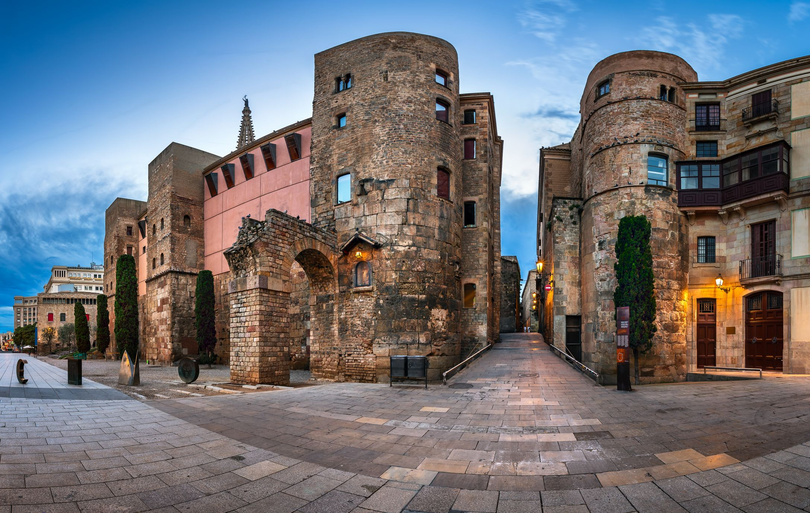
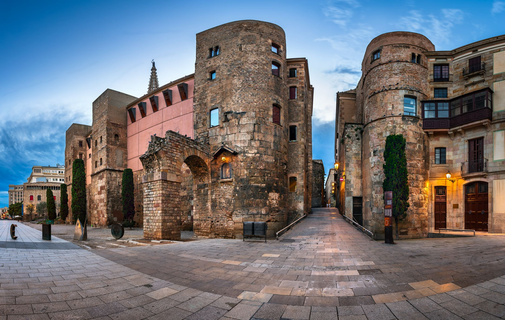
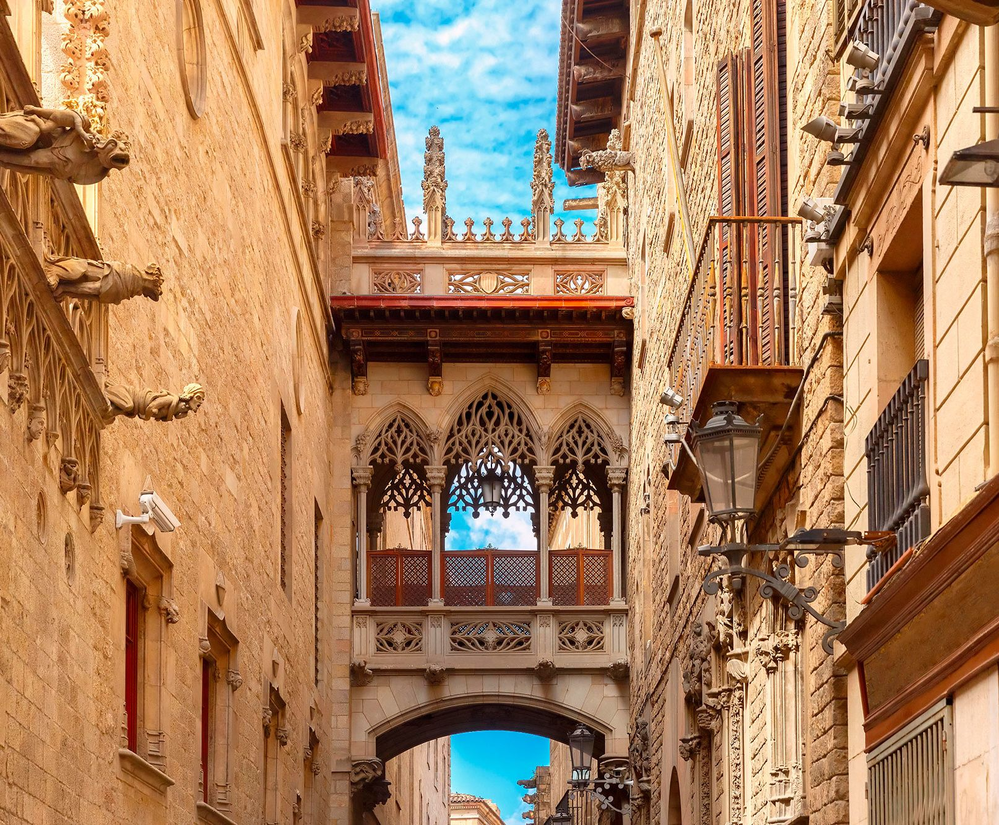
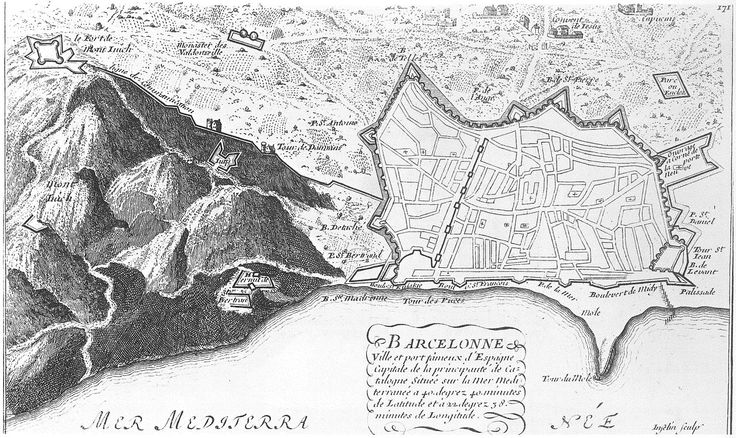
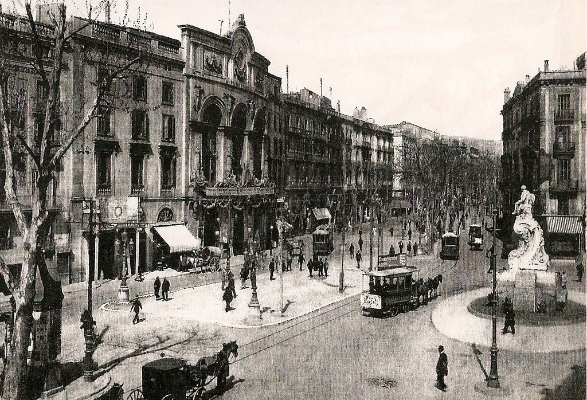

Barcino romana
Fundada en tiempos de Augusto, la ciudad romana de Barcino fue una colonia próspera aunque de escaso tamaño.
A partir del siglo III, se introdujo el cristianismo en la ciudad.
La historia de Barcelona se extiende a lo largo de 4,000 años, desde finales del Neolítico hasta la actualidad. Los primeros restos hallados en el territorio de la ciudad datan de esa época. A lo largo de su historia, Barcelona ha sido testigo de la presencia de diversos pueblos y culturas, incluyendo a los íberos, romanos, judíos, visigodos, musulmanes y cristianos. Aquí te presento un recorrido por las diferentes etapas históricas de Barcelona:
Fundada en tiempos de Augusto, la ciudad romana de Barcino fue una colonia próspera aunque de escaso tamaño.
A partir del siglo III, se introdujo el cristianismo en la ciudad.
Barcelona formó parte del reino visigodo entre los siglos V y VIII. Tras una breve ocupación musulmana, entró en la órbita del Imperio carolingio. Se constituyó como condado y se independizó en el siglo X.
En la Edad Media, el Condado de Barcelona adquirió preeminencia sobre otros condados catalanes.
Con la formación de la Corona de Aragón, Barcelona se convirtió en un centro político, económico, cultural y comercial.
La unión de Castilla y Aragón en la Monarquía Hispánica trajo un período de cierta decadencia. Conflictos militares como la guerra de los Segadores o la guerra de Sucesión afectaron a la ciudad. A partir del siglo XVIII, comenzó una etapa de pujanza económica.
El siglo XIX fue de gran crecimiento demográfico, económico y urbanístico para Barcelona. La industrialización y modernización transformaron la ciudad. El modernismo surgió como la expresión artística de la nueva sociedad barcelonesa. En el siglo XX, Barcelona continuó su evolución, enfrentando agitaciones políticas y cambios significativos.
